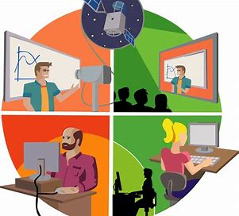

Es aquella donde el alumno aprende principalmente on-line o a través de internet. Una escuela on-line puede aglutinar muchos de los beneficios proporcionados por una escuela física (materiales didácticos, ejercicios on-line, clases on-line en directo, exámenes, foros, tutor especializado. etc) pero todo realizado a través de internet. Además la interacción entre estudiantes y profesores es posible aunque no es necesaria. La enseñanza virtual permite a los alumnos participar en un entorno digital y llevar a cabo su formación en cualquier materia.